Redundant by design
Run the primary and one or more backups as a single surface. The spare is always exactly where it should be.
Your backup rig only matters if it's on the exact same line as the primary. TSS drives both from one keyboard and mouse — scroll, page, and click, mirrored across every rig over your local network.
TSS is a control surface, not a teleprompter — it drives whatever teleprompter app you already run, on every machine at once.
Run the primary and one or more backups as a single surface. The spare is always exactly where it should be.
Arrow keys, Page Up/Down, Home/End and Space relay to all rigs in real time — no macros, no fiddling.
Mirror cursor moves and clicks to the backups — the host keeps its own mouse, so nothing fights.
Nudge any rig a little faster or slower so two different teleprompter apps stay line-for-line aligned.
Scan a QR code to turn any phone or tablet into a wireless controller for the whole system.
Everything stays on your Wi-Fi. No accounts, no cloud, no data leaves the room.
Every control the operator needs lives in one window — transport, speed, pointer, live rig status, and a join QR — and every move is mirrored to each rig. Here's what that looks like, piece by piece.

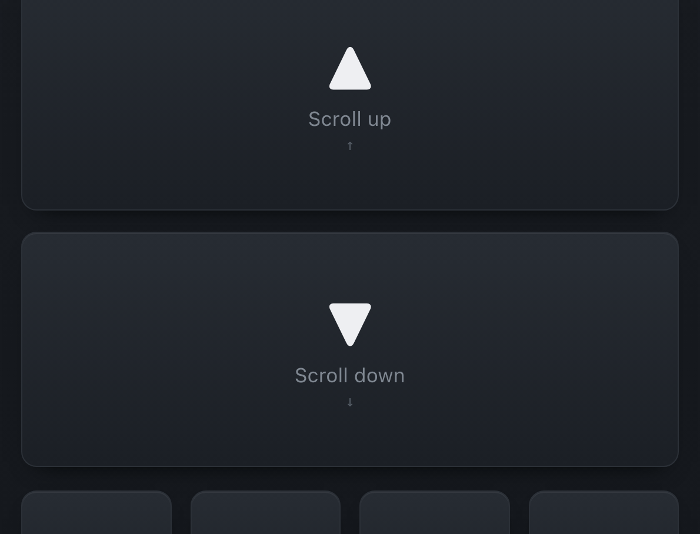
Oversized keys drive line scroll, Page Up/Down, and jump-to-top/bottom — fired to every rig the instant you press, by touch or keyboard.
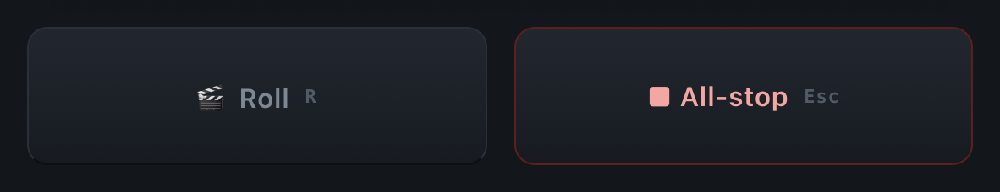
Roll runs a 3·2·1 countdown then starts every rig together (R). All-stop halts the crawl and pauses every rig on the spot — your panic button (Esc).
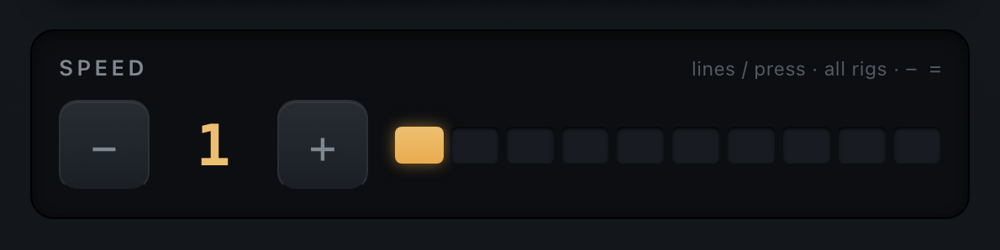
One control sets how far every rig scrolls per press, with a live level meter. Tap −/= or use the keys.
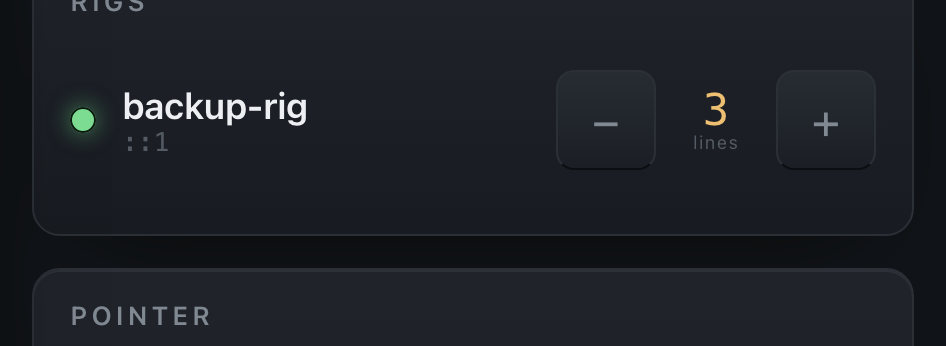
A live list of connected rigs, each with its own speed stepper — so two teleprompter apps that scroll at different rates still stay line-for-line.
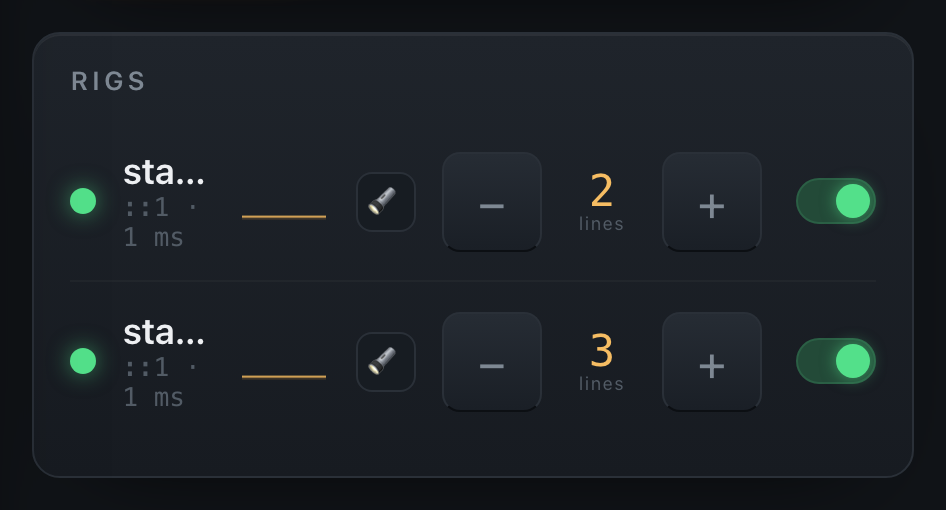
Every rig shows live latency and a sparkline. The 🔦 button makes that physical laptop beep and flash a banner, so you always know which machine is which.
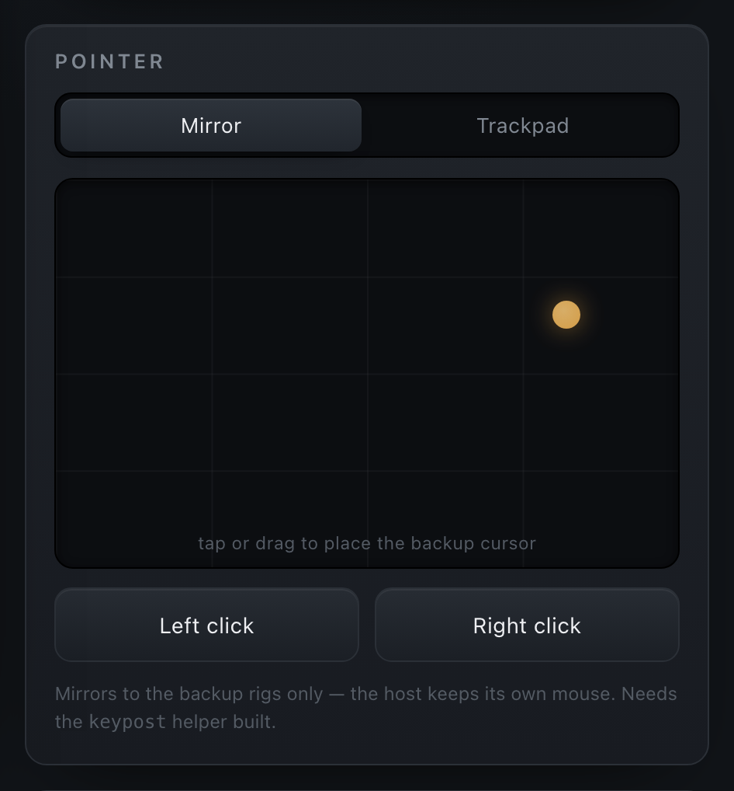
Move and click on the backups from a Mirror (absolute) or Trackpad (relative) surface, plus dedicated left/right click. The host keeps its own mouse.
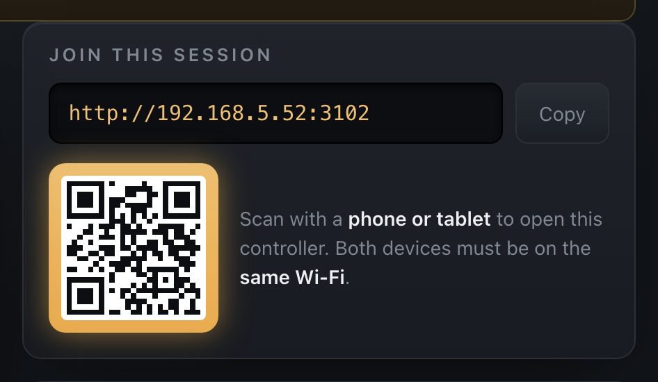
A scannable QR and copyable URL put the full controller on any device on the same Wi-Fi — a wireless remote in seconds.
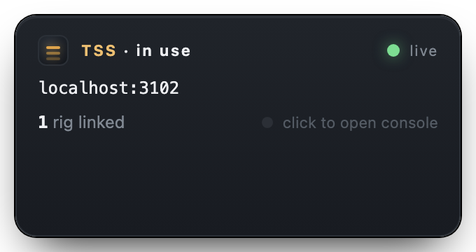
When the console isn't focused, a floating widget shows link status, rig count, and a live command ticker. Click it to jump back.
The confidence and control a live show needs — know every rig is in step, lock it down, and drive it from anywhere. swipe →
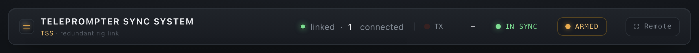
Every rig acknowledges each command. A live IN SYNC / DRIFT readout, per-rig latency, and connect/drop alerts — you always know both rigs agree.
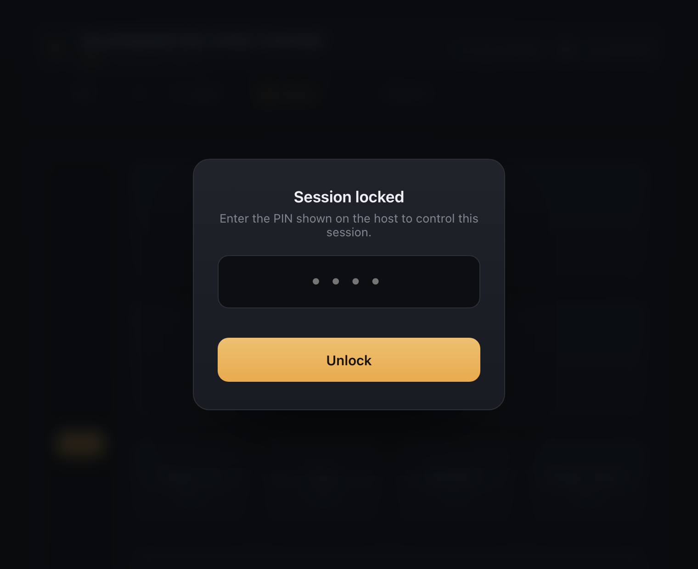
Set a PIN so only trusted devices can control the show, and Arm / Disarm to stop stray keys ever reaching air.
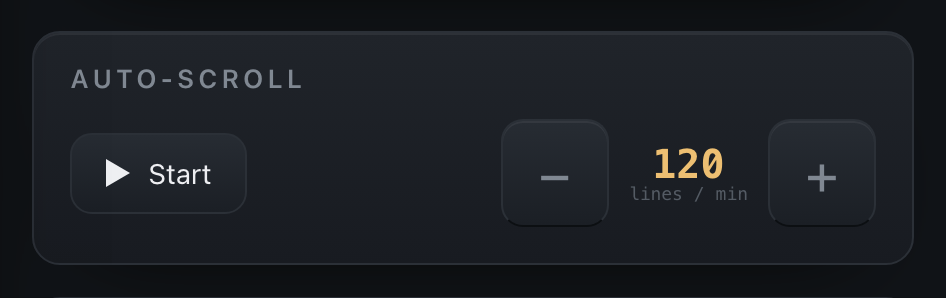
A steady, adjustable WPM-style scroll pushed to every rig — play or pause with one tap.
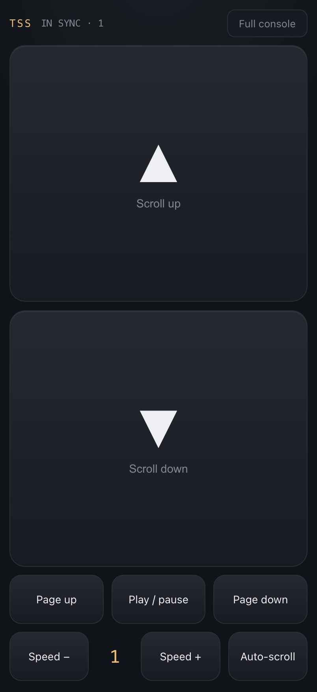
Scan the QR and your phone becomes a full-screen rocker — scroll, page, play, and speed, sized for a thumb.
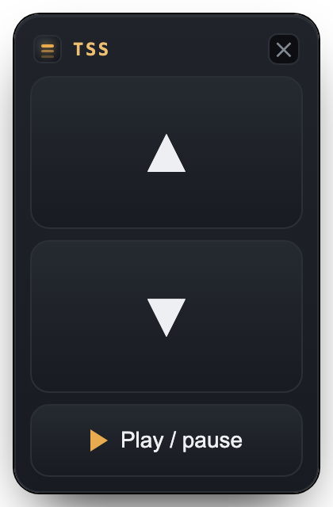
Global hotkeys, a menu-bar tray that hosts in the background, and a tiny always-on-top transport (⌘⇧M).
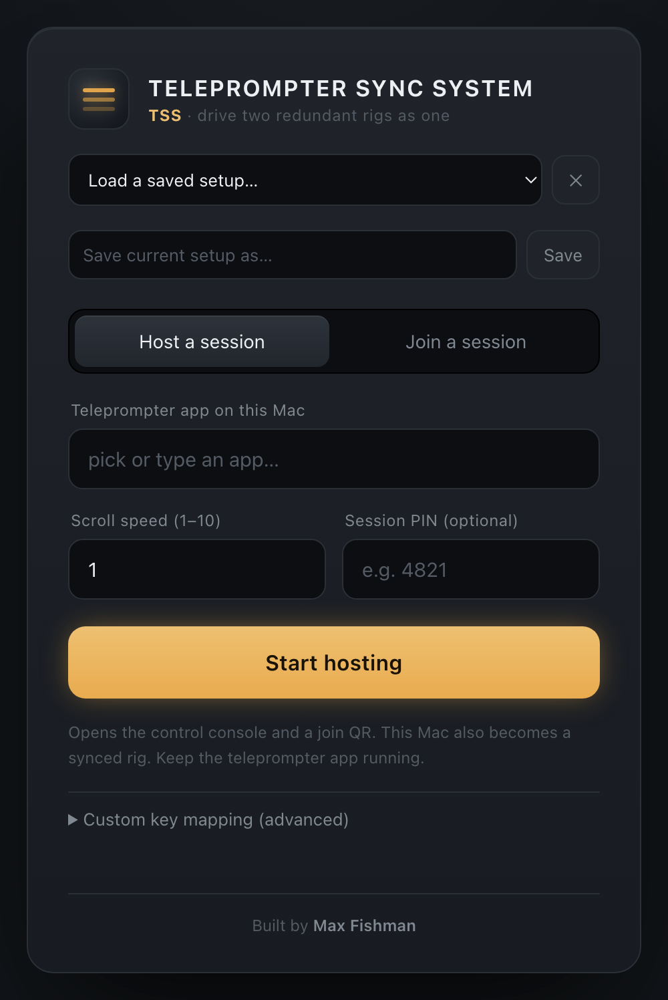
Save show presets and remap any action to the keys your teleprompter app actually uses.
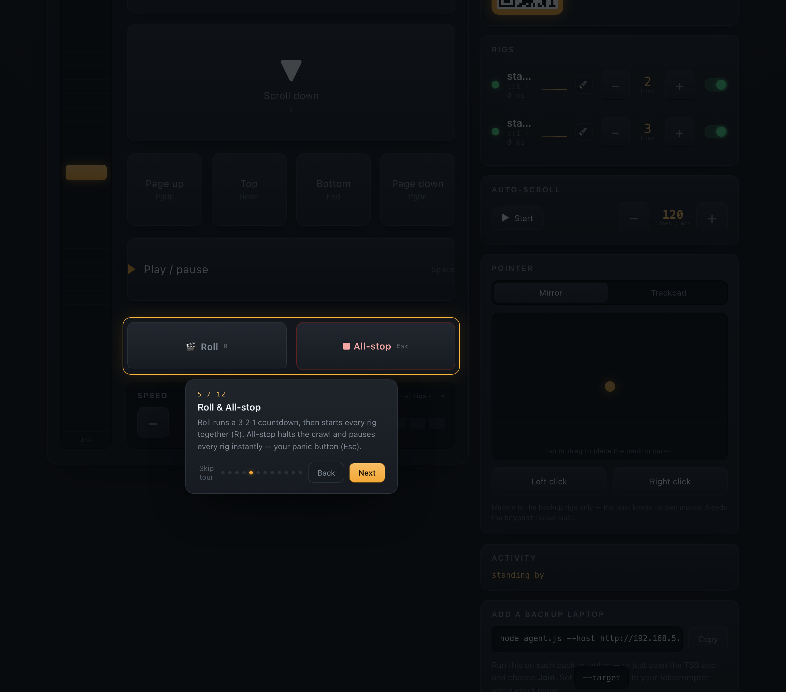
The first time you open the console, a built-in walkthrough spotlights every control in turn — transport, roll, speed, your rigs, sync and more. Replay it any time.
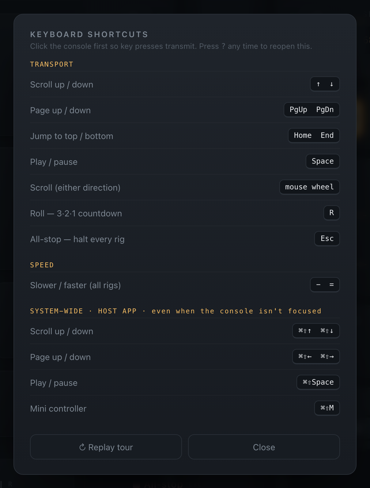
Press ? for a cheat-sheet of every console and system-wide shortcut — and a one-click replay of the tour.
The native macOS app bundles everything — hub, agent, and injector. Pick a role and go; no separate installs, no config files.
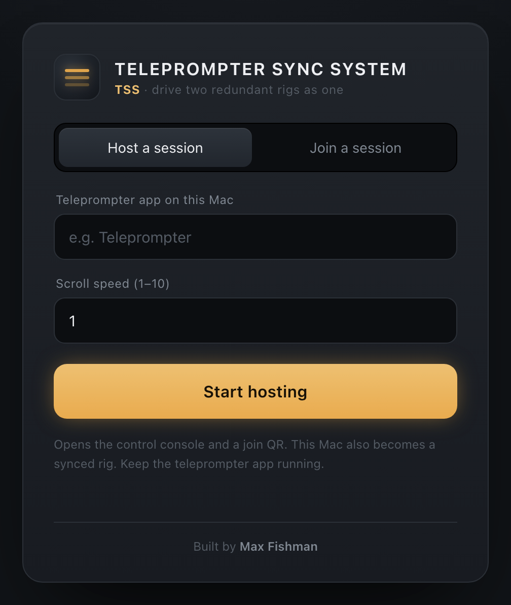
On the laptop with the keyboard, open TSS → Host a session and name your teleprompter app. The console and a join QR appear.
On each backup laptop, open TSS → Join and enter the host address. On a phone or tablet, just scan the QR.
Scroll, page, and click from the console — or straight from your keyboard and mouse. Every rig follows, instantly.
Free and open source. Download the macOS app and sync your rigs in minutes.
⬇ Download for macOS83692a13e9ed2498c94238b1eb83290eeeab416178b227bf85ff1caac910e975
verify after download: shasum -a 256 Teleprompter-Sync-System-1.9.0.dmg